QCrypt History
QCRYPT was founded by Matthias Christandl and Stephanie Wehner, and the initial members of its steering committee were instrumental in its early development. The members of the steering committee continue to give their time to provide an excellent conference for the community.
PC Chairs & Local Organizers
| Edition | PC chair | PC co-chair | Local organizer chair(s) |
|---|---|---|---|
| 2011 Zürich | Matthias Christandl | Matthias Christandl | |
| 2012 Singapore | Patrick Hayden | Stephanie Wehner | |
| 2013 Waterloo | Ivan Damgård | Vadim Makarov | |
| 2014 Paris | Norbert Lütkenhaus | Gregor Weihs | Eleni Diamanti |
| 2015 Tokyo | Renato Renner | Richard Hughes | Masahiro Takeoka |
| 2016 Washington | Matthias Christandl | Hugo Zbinden | Yi-Kai Liu |
| 2017 Cambridge | Thomas Vidick | Paolo Villaresi | Richard Peny, Adrian Wonford |
| 2018 Shanghai | Roger Colbeck | Christoph Marquardt | Qiang Zhang |
| 2019 Montréal | Anthony Leverrier | Eleni Diamanti | Gilles Brassard, Claude Crépeau, Sébastian Gambs, Louis Salvail |
| 2020 Amsterdam | Frédéric Dupuis | Feihu Xu | Serge Fehr, Christian Schaffner |
| 2021 Amsterdam | Carl Miller | Tobias Gehring | Serge Fehr, Christian Schaffner |
| 2022 Taiwan | Lim Ci Wen (Charles) | Anthony Martin | Bo-Yin Yang, Kai-Min Chung, Yeong-Cherng Liang |
| 2023 Maryland | Christian Schaffner | Giuseppe Vallone | Oliver Slattery, Gorjan Alagic |
| 2024 Vigo | Anne Broadbent | Bing Qi | Marcos Curty |
| 2025 Sanya | Chris Majenz | Eleni Diamanti | Sheng-Kai Liao, Qiang Zhang, Feihu Xu, Yuan Cao |
Steering Committees
| 2011 | ETH Zurich | Matthias Christandl (chair), Roger Colbeck, Michele Mosca, Renato Renner, Louis Salvail, Wolfgang Tittel, Stephanie Wehner |
| 2012 | CQT Singapore | Matthias Christandl, Roger Colbeck, Michele Mosca, Renato Renner, Louis Salvail, Wolfgang Tittel, Stephanie Wehner (chair) |
| 2013 | IQC Waterloo | Matthias Christandl, Roger Colbeck, Michele Mosca (chair), Louis Salvail, Masahide Sasaki, Wolfgang Tittel, Stephanie Wehner |
| 2014 | Paris | Matthias Christandl, Roger Colbeck, Eleni Diamanti (chair), Michele Mosca, Louis Salvail, Masahide Sasaki, Wolfgang Tittel, Stephanie Wehner |
| 2015 | Tokyo | Matthias Christandl, Roger Colbeck, Eleni Diamanti, Norbert Lütkenhaus, Masahide Sasaki (chair), Christian Schaffner, Wolfgang Tittel , Stephanie Wehner |
| 2016 | Washington DC | Eleni Diamanti, Yi-Kai Liu (chair), Norbert Lütkenhaus, Masahide Sasaki, Christian Schaffner, Wolfgang Tittel , Stephanie Wehner |
| 2017 | Cambridge | Anne Broadbent, Marcos Curty, Eleni Diamanti, Yi-Kai Liu, Norbert Lütkenhaus, Masahide Sasaki, Christian Schaffner (chair), Qiang Zhang |
| 2018 | Shanghai | Anne Broadbent, Marcos Curty, Yi-Kai Liu, Norbert Lütkenhaus, Christian Schaffner, Akihisa Tomita, Hugo Zbinden, Qiang Zhang (chair) |
| 2019 | Montreal | Anne Broadbent, Marcos Curty (chair), Serge Fehr, Yi-Kai Liu, Christoph Marquardt, Akihisa Tomita, Hugo Zbinden, Qiang Zhang |
| 2020 | online from Amsterdam | Gorjan Alagic, Marcos Curty, Serge Fehr, Stacey Jeffery, Christoph Marquardt, Akihisa Tomita, Hugo Zbinden, Qiang Zhang (chair) |
| 2021 | online from Amsterdam | Gorjan Alagic, Marco Lucamarini, Serge Fehr, Stacey Jeffery, Christoph Marquardt (chair), Akihisa Tomita, Feihu Xu, Hugo Zbinden |
| 2022 | Taiwan | Gorjan Alagic (chair), Kai-Min Chung, Serge Fehr, Stacey Jeffery, Qian Li, Marco Lucamarini, Christoph Marquardt, Feihu Xu |
| 2023 | Maryland | Gorjan Alagic, Rotem Arnon-Friedman, Kai-Min Chung, Serge Fehr (chair), Qian Li, Marco Lucamarini, Christoph Marquardt, Feihu Xu |
| 2024 | Vigo | Li Qian (chair), Kai-Min Chung,Gorjan Alagic, Rotem Arnon-Friedman, Charles Lim, Marco Lucamarini, Davide Rusca, Feihu Xu |
| 2025 | Sanya | Marco Lucamarini (chair), Davide Rusca (Co-chair), Feihu Xu, Li Qian, Charles Lim, Kai-Min Chung, Rotem Arnon-Friedman, Davide Bacco, Dakshita Khurana |
Student Paper Prizes
In some years, there are two winning papers selected, one in theory, one in experiment.
| Edition | Category | Winner | Title | |
|---|---|---|---|---|
| 2012 Singapore | Paul Jouguet | Experimental demonstration of continuous-variable quantum key distribution over 80 km of standard telecom fiber | video | |
| 2013 Waterloo | Tobias Gehring | Realization of Finite-Size Continuous-Variable Quantum Key Distribution based on Einstein-Podolsky-Rosen Entanglement | video | |
| 2014 Paris | Feihu Xu | Experimental QKD with source flaws and tight finite-key analysis | video | |
| 2015 Tokyo | Alexandru Gheorghiu | Robustness and device independence of verifiable blind quantum computing | video | |
| 2016 Washington | Rotem Arnon-Friedman | Simple and tight device-independent security proofs | video | |
| 2017 Cambridge | theory | Rotem Arnon-Friedman | Device-independent Randomness Amplification and Privatization | video |
| 2017 Cambridge | experiment | Norbert Kalb | Entanglement distillation between solid-state quantum network nodes | video |
| 2018 Shanghai | Wenyuan Wang | Enabling a Scalable High-Rate Measurement-Device-Independent Quantum Key Distribution Network: theory and experiment | video | |
| 2019 Montréal | theory | Jan Czajkowski | Quantum lazy sampling and game-playing proofs for quantum indifferentiability | |
| 2019 Montréal | experiment | Mariella Minder | Experimental Twin Field Quantum Key Distribution beyond the repeaterless secret key capacity bound | |
| 2019 Montréal | experiment | Mirko Pittaluga | Experimental Twin Field Quantum Key Distribution beyond the repeaterless secret key capacity bound | |
| 2020 Amsterdam | theory | Jiayu Zhang | Succinct Blind Quantum Computation Using a Random Oracle | video |
| 2020 Amsterdam | experiment | Fabian Beutel | Broadband Detector-Integrated On-Chip QKD Receiver for GHz Clock Rates | video |
| 2021 Amsterdam | theory | Tony Metger | Device-independent protocols from computational assumptions | video |
| 2021 Amsterdam | experiment | Likang Zhang | High-rate quantum key distribution with silicon photonics | video |
| 2022 Taiwan | theory | Tony Metger | Generalized entropy accumulation for quantum cryptography | video |
| 2022 Taiwan | experiment | Fadri Grünenfelder | Towards 100 Mbps secret key rate QKD | video |
| 2023 Maryland | theory | James Bartusek | Obfuscation of Pseudo-Deterministic Quantum Circuits | |
| 2023 Maryland | experiment | Joseph Dolphin | The Application of Hybrid Photonic Integration to Quantum Key Distribution | |
| 2024 Vigo | theory | Tony Metger, Tina Zhang | Succinct arguments for QMA from standard assumptions via compiled nonlocal games | |
| 2024 Vigo | experiment | Peng Qingquan | Hacking twin-field quantum key distribution via wavelength-switching attack | |
| 2025 Sanya | theory | Amir Arqand | Marginal-constrained entropy accumulation theorem | |
| 2025 Sanya | experiment | Giulia Guarda, Noemi Tagliavacche | Frequency-bin entanglement-based quantum key distribution | |
Best Poster Awards
Some editions of QCrypt features best-poster awards, sometimes awarded per poster session.
| Edition | Winner | Winner |
|---|---|---|
| 2013 Waterloo | Rotem Arnon-Friedman | Neil Sinclair |
| 2014 Paris | Boris Korzh | |
| 2015 Tokyo | Mark Kaplan | |
| 2017 Cambridge | Lev Vaidman | Cupjin Huang and Yaoyun Shi |
| 2018 Shanghai | Shiyu Wang | Yingqiu Mao |
Websites & Logos
2025
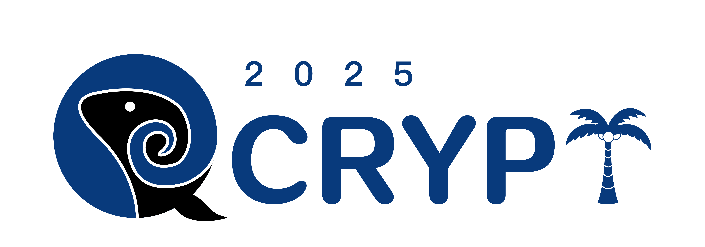
2024
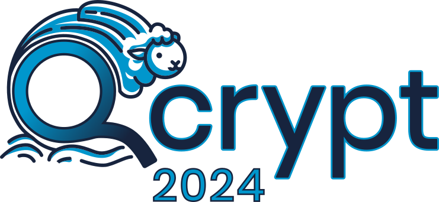
2023
2022
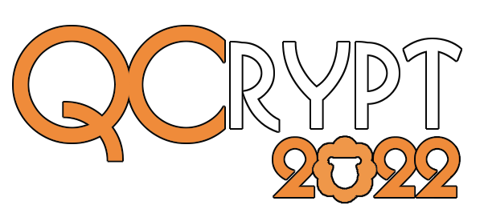
2021
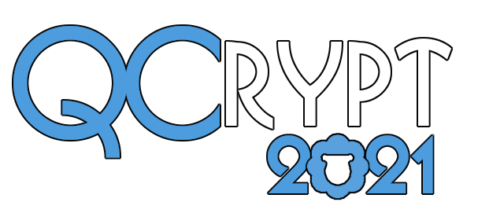
2020
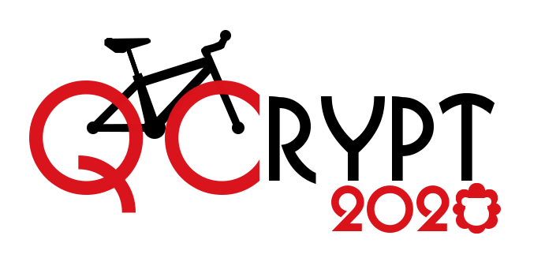
2019
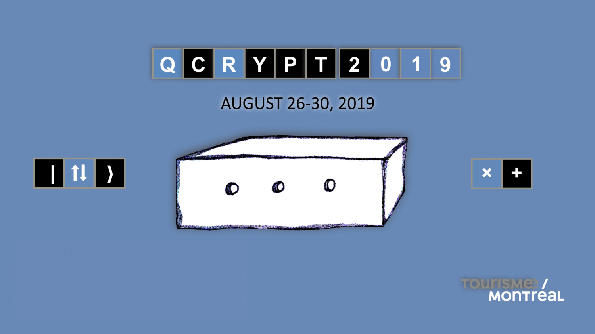
2018
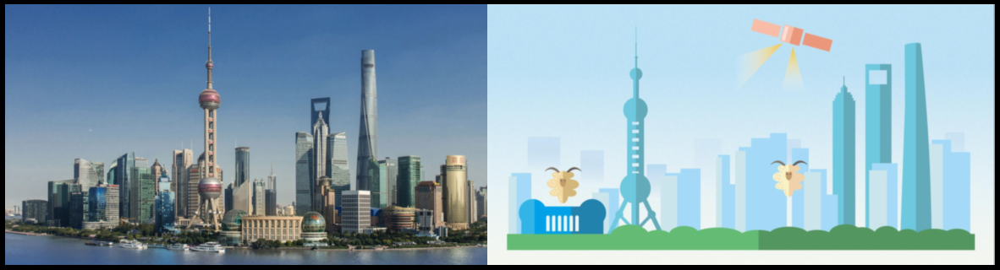
2017
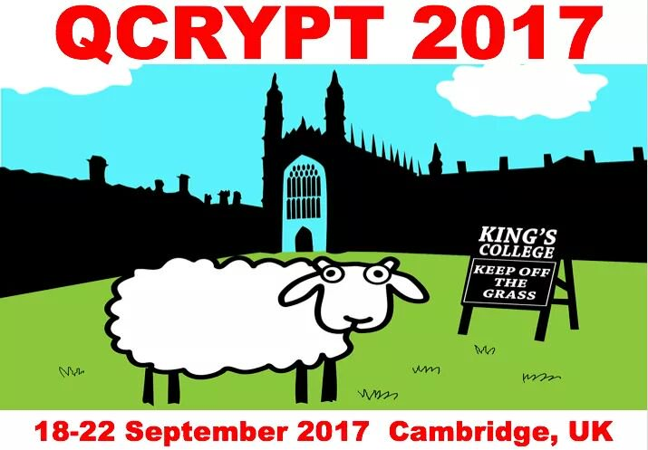
2016
2015
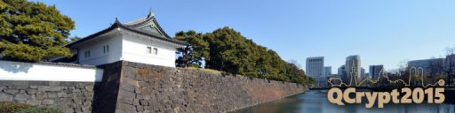
2014
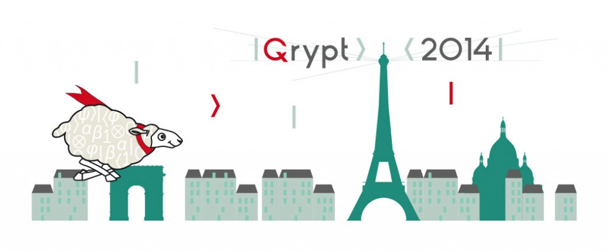
2013
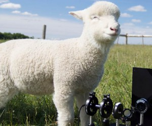
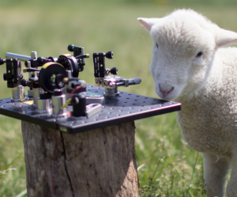
2012
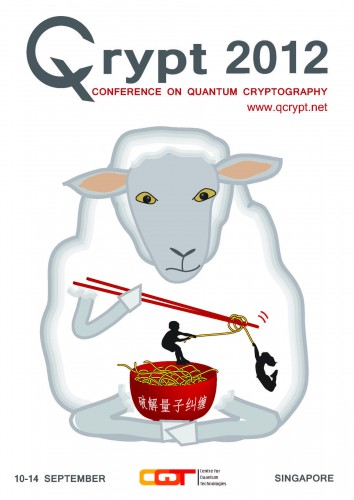
2011
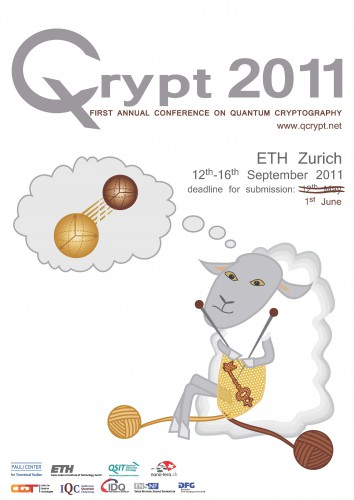